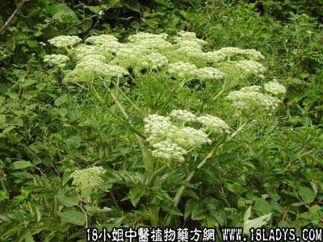

当归(中草药名称:当归)(科目:伞形科)

【中药概述】
当归为伞形科草本植物当归的根。甘、辛、温。归肝、心、脾经。
1．补血调经：用于血虚及月经不调、经闭、痛经等，如四物汤、（<内久伤辨惑论>当归补血汤）。
2．活血通络：用于散瘀消肿，产后瘀痛等证，常配红花，赤芍，三七，丹参，乳香，没药等；
跌打损伤，可配连翘银花赤芍红花皂刺炙山甲等；风湿痹痛，可与桂枝，羌活，独活，威灵仙，片姜黄，红花，薏米，川断，附子等；血虚腹痛，疮痈肿痛及冠心病心绞痛、血栓闭塞性脉管炎。如（桃红四物汤、复元活血汤、生化汤、蠲痹汤、仙方活命饮）。
3．润肠通便：用于阴血虚少的肠燥便秘等，常配麻仁，生地，熟地，桃仁，肉苁蓉，郁李仁，瓜蒌仁，大黄等，如（润肠丸）。
【近代研究】
对子宫具“双向性”作用。其挥发油部分能抑制子宫肌而使子宫弛缓，水溶性、醇溶性非挥发性物质则能兴奋子宫肌而使收缩加强。
【药效鉴别】
当归为重要而有良效的补血药，兼有活血作用，在补血药中颇有特色。为血中气药。
【临证应用】
（<内外伤辨惑论>当归补血汤）。治劳倦内伤，血虚气弱，症见肌热面赤，烦渴欲饮，脉洪大而虚，重按无力，以及妇女产后血虚发热，头痛，或疮疡溃后，久不愈合等。
【化学成分】
含藁本内酯、正十二烷醇、香柠檬内酯等。
【用量用法】
3——10g，水煎服。
【注】
归头：偏于止血而上行。归身：偏于养血而守中。归尾：甘补辛散，温润活血，偏于破血而下行。
酒当归：使当归的作用趋势“向上”、“向外”增强活血化瘀，止痛通络之功。1.血虚体亏。2.月经不调。3.跌打损伤。
土炒当归：既能补血又不致滑肠，适用于血虚又便溏者。